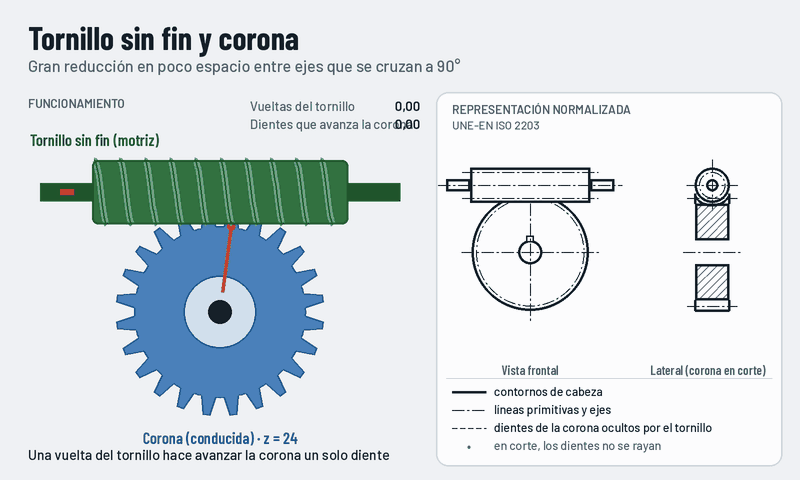

Tornillo sin fin y corona
Un tornillo, llamado sin fin, engrana con una rueda dentada llamada corona. Los ejes se cruzan a 90° sin cortarse y se consigue una gran reducción en muy poco espacio.

Qué observar
- Cada vuelta del tornillo hace avanzar la corona un diente (tornillo de una entrada).
- El tornillo es el elemento motriz.
- Suele ser irreversible: la corona no puede mover el tornillo, y eso hace de freno.
Cómo se representa
- Corona en vista frontal: cabeza con línea gruesa y primitiva con trazo y punto.
- Tornillo de lado: líneas de cabeza gruesas y primitiva tangente a la de la corona.
- La parte de la corona tapada por el tornillo, en discontinua.
La cuenta
i = z₂ / entradas
Con una corona de 24 dientes y un tornillo de una entrada, i = 24:
el tornillo da 24 vueltas por cada vuelta de la corona.
Dónde lo encontramos
- Reductores de velocidad.
- Elevadores, polipastos y clavijas de guitarra.
- Divisores de fresadora y mesas giratorias.